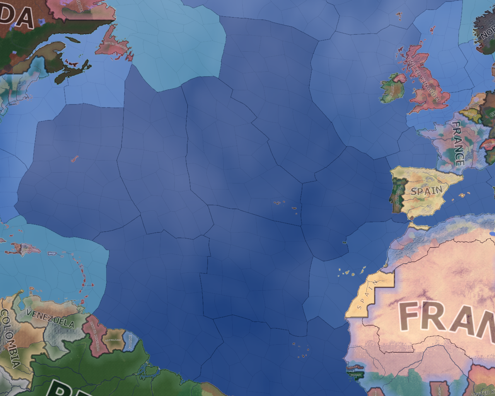
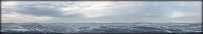
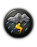

战略区域
原页面：Strategic region
A strategic region is a collection of adjacent provinces which define a broad geographical area. The world is comprised of 304 strategic regions. Note: strategic region id 15 "Asia" has 0 provinces assigned and, therefore, does not exist in-game.
Strategic regions are particularly relevant to 海战和air warfare, as various key mechanics (such as 海军任务/空中任务和制海权/制空权) apply directly to strategic regions.
Strategic region names and the player's extent of naval supremacy/air superiority within each region can be seen via the 战略海军地图模式 or the 战略空军地图模式.
Many strategic regions contain water provinces which comprise part of the world's interconnected seas and oceans. The water provinces within these regions are subject to a number of mechanics relevant to naval activity, which are described below.

Each strategic region containing water provinces has a single 海军地形[1] associated with all water provinces in that region. Most terrain types have bonuses and/or penalties associated with them, which are applied to ships within the associated region.
When the terrain mapmode is enabled, naval terrains are distinguished on the map as different shades of blue.
海洋
Oceans are the only naval terrain type with no associated bonuses or penalties other than mines.
| Ship type | Chance to hit mines |
|---|---|
| All ships | -75% |
浅海
潜艇 have greater difficulty concealing themselves in these shallow waters.
| Ship type | Chance to hit mines | Visibility | Positioning |
|---|---|---|---|
| 潜艇 | -50% | +33% | -5% |
| Other ships | -50% | -5% |
深海

护航舰 suffer some combat penalties in this terrain, while 主力舰 experience no penalties. Submarines are slightly harder to detect here.
| Ship type | Chance to hit mines | 速度 | 攻击 | 防御 | Visibility |
|---|---|---|---|---|---|
| 驱逐舰 | -95% | -20% | -20% | -20% | |
| 轻巡洋舰 | -95% | -10% | -10% | -10% | |
| 潜艇 | -95% | -25% | -15% | ||
| Other ships | -95% |
峡湾与群岛
Ships are more easily concealed in this intricate terrain, but capital ships suffer a range of penalties as well.
| Ship type | Fuel consumption | Visibility | Positioning | 速度 | 攻击 | 防御 |
|---|---|---|---|---|---|---|
| 主力舰 | +20% | -20% | -15% | -20% | -20% | -20% |
| Other ships | -20% | -15% |
Strategic regions containing water provinces may have 修正[2] which specifically affect naval activity in the region. When a water province within such a region is selected, these modifiers (if any) are indicated by small icons over the corner of the 海军地形 graphic.
The effects of any modifiers present are stacked with any effects from naval terrain.
Bad weather
Depending upon 天气 in the region, naval modifiers may be temporarily applied.
These modifiers have various effects upon naval activity in the afflicted regions:
| 海上打击 | Carrier traffic | Naval hit chance | 海军速度 | Naval detection | Retreat speed | Positioning | |
|---|---|---|---|---|---|---|---|
| Rain | -20% | -5% | -5% | -10% | +5% | ||
 Storm |
-40% | -80% | -20% | -10% | -20% | +10% | -10% |
| Snow | -30% | -5% | -5% | -15% | +5% | -10% | |
| Blizzard | -40% | -100% | -10% | -10% | -30% | +15% | -20% |
| Sandstorm | -90% |
北极水域
The 北极水域 modifier applies permanently to some strategic regions in the north (e.g. the Bering Sea).
It has the following effects:
- -5% speed while retreating
- +20% casualties on sink
- +10%损耗
- -20% positioning
Any extra casualties from arctic water are not counted as being inflicted by the nation that sunk the ship, but are instead listed under “unknown.”
鲨鱼出没水域
The 鲨鱼出没水域 modifier applies permanently to various strategic regions which have historically been associated with shark attacks. When a ship is sunk in one of these regions (e.g. the Solomon Sea), crew casualties are increased by +60%. Any extra casualties from the shark infested waters are not counted as being inflicted by the nation that sunk the ship, but are instead listed under “unknown.”
When a strategic region containing water provinces is selected, the 准入等级 of that region can be manually configured by the player.
These access levels only apply to the player's own ships, and are applicable to 运输船队 in addition to warships with the exclusion of manual orders.
| 准入等级 | 效果 |
|---|---|
| Allowed | Our Fleets and Trade routes will move through this region as normal. |
| Avoid | Our Fleets and Trade routes will try to avoid this region, unless there is no other route. |
| Blocked | Our Trade routes will never pass through this region. Our Fleets will never pass through this region, unless there is no other route. |
At the start of the game, all such regions are initialised to the Allowed access level.
List of strategic regions
| ID | In-game Name | File Name | Province Count |
|---|---|---|---|
| 1 | Southern England | Southern England | 43 |
| 2 | Northern England | Northern England | 29 |
| 3 | 苏格兰 | Scotland and Northern Ireland | 37 |
| 4 | 爱尔兰 | 爱尔兰 | 34 |
| 5 | Benelux Region | Benelux Region | 40 |
| 6 | North-West Germany | North-West Germany | 38 |
| 7 | Western Germany | Western Germany | 85 |
| 8 | Eastern Germany | Eastern Germany | 87 |
| 9 | Gulf of Finland | Baltic Sea | 3 |
| 10 | 南瑞典 | 南瑞典 | 78 |
| 11 | 南挪威 | 南挪威 | 90 |
| 12 | Kola | Northern Scandinavia | 33 |
| 13 | 东芬兰 | 芬兰 | 63 |
| 14 | Trans-Urals | TransUrals | 84 |
| 15 | 亚洲 | 0 | |
| 16 | North Sea | North Sea | 15 |
| 17 | Ethiopian Highlands | 非洲 | 20 |
| 18 | English Channel | Channel | 19 |
| 19 | Northern France | Northern France | 75 |
| 20 | Southern France | Southern France | 109 |
| 21 | Alpine Region | Alpine Region | 102 |
| 22 | Czechoslavakia | Czechoslavakia | 61 |
| 23 | 意大利 | 意大利 | 71 |
| 24 | Western Balkans | Western Balkans | 118 |
| 25 | 希腊 | 希腊 | 49 |
| 26 | Eastern Balkans | Eastern Balkans | 92 |
| 27 | Northern Balkans | Northern Balkans | 81 |
| 28 | 中东 | 中东 | 46 |
| 29 | Central Mediterranean Sea | Central Mediterranean Sea | 12 |
| 30 | Black Sea | Black Sea | 7 |
| 31 | Deccan Plateau | Indian Area | 43 |
| 32 | South-Eastern Pacific | Southern Ocean | 95 |
| 33 | 阿拉斯加 | 北美洲 | 15 |
| 34 | Central America | Central America | 20 |
| 35 | Pampas | 南美洲 | 36 |
| 36 | 格陵兰 | Atlantic Ocean | 5 |
| 37 | Baltic States | Baltic States | 77 |
| 38 | Western Poland | Western Poland | 83 |
| 39 | Eastern Poland | Eastern Poland | 83 |
| 40 | Transvolga | Western Russia | 209 |
| 41 | Northeastern Iberia | Northeastern Iberia | 85 |
| 42 | Bay of Biscay | Bay of Biscay | 9 |
| 43 | Western Approaches | Western Approaches | 35 |
| 44 | Denmark Strait | Denmark Strait | 26 |
| 45 | 挪威海 | 挪威海 | 37 |
| 46 | Barents Sea | Barents Sea | 15 |
| 47 | Iberian Coast | Spanish Coast | 23 |
| 48 | African Coast | African Coast | 17 |
| 49 | North Atlantic Ridge | Mid Atlantic 1 | 31 |
| 50 | Labrador Sea | Labrador Sea | 48 |
| 51 | Mid Atlantic gap | Mid atlantic 2 | 26 |
| 52 | Gulf of Mexico | Gulf of Mexico | 10 |
| 53 | Caribbean Sea | Caribbean | 68 |
| 54 | Eastern Seaboard | Eastern Seaboard | 9 |
| 55 | Newfoundland Sea | Newfoundland Sea | 11 |
| 56 | Mid Atlantic | Mid Atlantic 3 | 26 |
| 57 | Sargasso Sea | Mid Atlantic 4 | 36 |
| 58 | Central Atlantic Gap | Mid Atlantic 5 | 28 |
| 59 | Demerara Plain | Mid Atlantic 6 | 45 |
| 60 | West Indian Ocean | West Indian Ocean | 99 |
| 61 | Cap Verde Plain | Central Atlantic | 45 |
| 62 | Gulf of Guinea | Cape Approach | 109 |
| 63 | Argentine Coast | Argintine Coast | 28 |
| 64 | South Georgia Sea | Super Southern atlantic 1 | 86 |
| 65 | Cape of Africa | Cape of Africa | 45 |
| 66 | South Central Atlantic | South central atlantic 1 | 92 |
| 67 | Atlantic-Indian Ridge | Super south atlantic 2 | 47 |
| 68 | Western Mediterranean Sea | Western Mediterranean Sea | 17 |
| 69 | Eastern Mediterranean Sea | Eastern mediterranean Sea | 14 |
| 70 | Caspian Sea | Caspian Sea | 4 |
| 71 | East Indian Ocean | East Indian Ocean | 62 |
| 72 | Straits of Malacca | Straits of Malacca | 10 |
| 73 | 泰国湾 | 泰国湾 | 6 |
| 74 | South East Indian Ocean | South East Indian Ocean | 76 |
| 75 | 南海 | 南海 | 31 |
| 76 | 东海 | 东海 | 27 |
| 77 | 黄海 | 黄海 | 6 |
| 78 | Philippine Sea | Philippine Sea | 35 |
| 79 | 日本海 | 日本海 | 16 |
| 80 | Celebes Sea | Celebes Sea | 10 |
| 81 | Coral Sea | Coral Sea | 23 |
| 82 | Gulf of Carpentaria | Gulf of Carpentaria | 5 |
| 83 | Solomon Sea | Solomon Sea | 48 |
| 84 | Bismarck Sea | Bismarck Sea | 63 |
| 85 | South West Indian Ocean | South West Indian Ocean | 97 |
| 86 | Tasman Sea | Tasman Sea | 42 |
| 87 | Sea of Okhotsk | Sea of Okhotsk | 38 |
| 88 | Bering Sea | Bering Sea | 68 |
| 89 | Western Seaboard | Western Seaboard | 10 |
| 90 | 日本近海 | 日本近海 | 17 |
| 91 | Arafura Sea | Arafura Sea | 15 |
| 92 | Timor Sea | Timor Sea | 17 |
| 93 | Java Sea | Banda Sea | 57 |
| 94 | Mariana Region | Western Pacific | 44 |
| 95 | West Emperor Chain | Western pacific 2 | 60 |
| 96 | North Emperor Chain | North West Pacific | 52 |
| 97 | Eastern Micronesia | South West Pacific | 83 |
| 98 | Great Australian Bight | Great Austrialian Blight | 36 |
| 99 | Far Eastern Indian Ocean | Far Eastern Indian Ocean | 83 |
| 100 | Red Sea | Red Sea | 9 |
| 101 | Bay of Bengal | Bay of Bengal | 39 |
| 102 | East African Coast | East African Coast | 23 |
| 103 | Mozambique Channel | Mozambique Channel | 12 |
| 104 | Arabian Sea | Arabian Sea | 29 |
| 105 | Hawaii Ridge | Eastern Pacific 1 | 68 |
| 106 | Mexican Coast | Mexican Coast | 27 |
| 107 | Western Canal zone | Western Canal zone | 16 |
| 108 | South American coast | South American coast | 31 |
| 109 | Peruvian Coast | Peruvian Coast | 24 |
| 110 | East Pacific Rise | East Pacific 2 | 67 |
| 111 | North Central Pacific | East Pacific 3 | 60 |
| 112 | Far South Pacific | Far South Pacific | 77 |
| 113 | South Central Pacific | South Pacific | 39 |
| 114 | North Pacific | North Pacific | 40 |
| 115 | North East Pacific | North East Pacific | 34 |
| 116 | Central Iranian Range | 伊朗 | 14 |
| 117 | East Coast | East Coast | 101 |
| 118 | Cascades | West Coast | 45 |
| 119 | South West | South West | 65 |
| 120 | Central USA | Central USA | 106 |
| 121 | Eastern Canada | Eastern Canada | 51 |
| 122 | Yukon | Western Canada | 3 |
| 123 | Transvolcanic Belt | 墨西哥 | 27 |
| 124 | Northern South America | Northern South America | 52 |
| 125 | 巴西 | 巴西 | 44 |
| 126 | Eastern Maghreb | North Africa | 67 |
| 127 | Sahara Desert | Saharadesert | 69 |
| 128 | 埃及 | 埃及 | 55 |
| 129 | Asia minor | Asia minor | 169 |
| 130 | 乌克兰 | 乌克兰 | 171 |
| 131 | 白俄罗斯 | 白俄罗斯 | 110 |
| 132 | Novgorod | Northern Front | 133 |
| 133 | Central Russia | Central Russia | 279 |
| 134 | Caucasus Region | Caucasus Region | 66 |
| 135 | Kuban Region | Taman Region | 131 |
| 136 | Alash | Great Steppe | 106 |
| 137 | Western Steppe | Western Steppe | 209 |
| 138 | Ural Region | Ural Region | 27 |
| 139 | 南非 | 南非 | 31 |
| 140 | Sub-Saharan Africa | Sub-Sarhan Africa | 64 |
| 141 | Eastern India | East India | 21 |
| 142 | North Indochina | South East Asia | 60 |
| 143 | Northern China | Eastern China | 67 |
| 144 | Western China | Western China | 39 |
| 145 | Taklamakan | Central Asia | 22 |
| 146 | Himalayas | Himalayas | 28 |
| 147 | Northern Siberia | Siberian Region | 22 |
| 148 | Russian Far East | Russian Far East | 62 |
| 149 | Eastern Siberia | Eastern Siberia | 42 |
| 150 | Archangelsk | Artic Russia | 121 |
| 151 | Western Siberia | Western Siberia | 57 |
| 152 | Outer Mongolia | Central Steppe | 56 |
| 153 | Northern India | Northern India | 36 |
| 154 | Central Japan | Home Islands | 42 |
| 155 | Western Manchuria | Manchuria | 75 |
| 156 | Southern Australia | Austrialia | 28 |
| 157 | 北岛 | New Nealand | 24 |
| 158 | Sunda Islands | 几内亚 | 58 |
| 159 | Borneo | Borneo | 67 |
| 160 | 菲律宾 | 菲律宾 | 77 |
| 161 | 冰岛 | 冰岛 | 7 |
| 162 | North Afghanistan | Afghanistan Area | 17 |
| 163 | 亚马逊 | Amazonian Brazil | 61 |
| 164 | Eastern China | South East China | 75 |
| 165 | Southern China | South West China | 49 |
| 166 | Hudson Bay | Hudson Bay | 14 |
| 167 | New Guinea | New Guinea | 72 |
| 168 | Adriatic Sea | Adriatic Sea | 3 |
| 169 | Tyrrhenian Sea | Tyrrhenian Sea | 17 |
| 170 | Florida Coast | Florida Coast | 22 |
| 171 | Northwest Coast | Northwest Coast | 29 |
| 172 | Pacific Line Ridge | South Central Pacific | 49 |
| 173 | Eastern North Sea | Eastern North Sea | 10 |
| 174 | Norwegian Coast | Norwegian Coast | 9 |
| 175 | Central Pacific | Southeastern Central Pacific | 53 |
| 176 | Central North Pacific | Central North Pacific | 53 |
| 177 | Western North Pacific | Western North Pacific | 25 |
| 178 | West Polynesia | West Polynesia | 39 |
| 179 | 法属波利尼西亚 | 法属波利尼西亚 | 40 |
| 180 | Micronesian Gap | Micronesian Gap | 26 |
| 181 | 马达加斯加 | 马达加斯加 | 10 |
| 182 | Western Maghreb | North West Africa | 44 |
| 183 | Central Africa | Central Africa | 20 |
| 184 | 喀麦隆 | South West Africa | 13 |
| 185 | South East Africa | South East Africa | 20 |
| 186 | Korea | Korea | 69 |
| 187 | Sumatra | Sumatra | 63 |
| 188 | Malaya | Malaya | 44 |
| 189 | Tenasserim | Burma | 43 |
| 190 | 巴基斯坦 | 巴基斯坦 | 21 |
| 191 | 北挪威 | 北挪威 | 45 |
| 192 | 下诺尔兰 | Northern Sweden | 63 |
| 193 | Northern Australia | Northern Australia | 44 |
| 194 | Eastern Australia | Eastern Australia | 36 |
| 195 | Central Australia | Central Australia | 29 |
| 196 | Central Arabia | Arabian Coast | 17 |
| 197 | 新英格兰 | 新英格兰 | 66 |
| 198 | Great Lakes | Midwest | 112 |
| 199 | Northern Rockies | Rocky Mountains | 49 |
| 200 | Quinghai | Quinghai | 27 |
| 201 | Northern Andes | Northern Andes | 33 |
| 202 | Aegean Sea | Aegean Sea | 13 |
| 203 | Persian Gulf | Persian Gulf | 4 |
| 204 | Sierra Madre | Sierra Madre | 48 |
| 205 | Yucatan Peninsula | Yucatan Peninsula | 16 |
| 206 | Lower Baltic Sea | Lower Baltic Sea | 10 |
| 207 | Danish Belts | Danish Belts | 3 |
| 208 | Western France | Western France | 46 |
| 209 | Northwestern Iberia | Northwestern Iberia | 87 |
| 210 | Southern Iberia | Southern Iberia | 93 |
| 211 | Gulf Coast | Gulf Coast | 93 |
| 212 | Manitoba | Central Canada | 26 |
| 213 | Maritimes | Maritimes | 16 |
| 214 | Appalachia | Appalachia | 42 |
| 215 | 纳米比亚 | 纳米比亚 | 14 |
| 216 | Upper Nile | Upper Nile | 44 |
| 217 | Lake Victoria | Lake Victoria | 42 |
| 218 | 加利福尼亚 | 加利福尼亚 | 71 |
| 219 | Southern Rockies | Southern Rockies | 60 |
| 220 | Labrador and Newfoundland | Labrador and Newfoundland | 20 |
| 221 | Saskatchewan | Saskatchewan | 40 |
| 222 | Northern Canada | Northern Canada | 14 |
| 223 | Zambezi | North South Africa | 22 |
| 224 | 安哥拉 | 安哥拉 | 18 |
| 225 | Tripoli | Tripoli | 55 |
| 226 | West Africa | West Africa | 25 |
| 227 | North East Congo | 刚果 | 19 |
| 228 | South Indochina | South Indochina | 64 |
| 229 | 暹罗 | 暹罗 | 57 |
| 230 | Cape Comorin | Cape Comorin | 61 |
| 231 | East Ghats | Coromandel Coast | 47 |
| 232 | Levant | Levant | 46 |
| 233 | Quebec | Quebec | 37 |
| 234 | Ontario Region | Ontario Region | 30 |
| 235 | 不列颠哥伦比亚 | 不列颠哥伦比亚 | 37 |
| 236 | 南阿拉伯 | 南阿拉伯 | 23 |
| 237 | 汉志 | 汉志 | 20 |
| 238 | East Arabia | East Arabia | 20 |
| 239 | Alborz | Alborz | 22 |
| 240 | Western Zagros | Zagros | 11 |
| 241 | Dasht-e kavir | Dasht-e kavir | 16 |
| 242 | Northern Manchuria | Northern Manchuria | 40 |
| 243 | Eastern Manchuria | Eastern Manchuria | 69 |
| 244 | Chahar | Chahar | 39 |
| 245 | Shanxi Region | Shanxi Region | 41 |
| 246 | Central China | Central China | 63 |
| 247 | Yantze River Region | Yantze River Region | 91 |
| 248 | Guangxi | Guangxi | 75 |
| 249 | 滇系 | 滇系 | 32 |
| 250 | 康区 | 康区 | 23 |
| 251 | Ngari | Ngari | 14 |
| 252 | Tien Shan | Tien Shan | 34 |
| 253 | Vindhyachal | Vindhyachal | 13 |
| 254 | Thar Desert | Thar Desert | 33 |
| 255 | 阿穆尔 | 阿穆尔 | 49 |
| 256 | Transbaikal | Transbaikal | 49 |
| 257 | Northern Far East | Northern Far East | 13 |
| 258 | 鄂霍次克 | 鄂霍次克 | 14 |
| 259 | Eastern Sakha | Sakha | 12 |
| 260 | Western Sakha | Western Sakha | 29 |
| 261 | Altai | Altai | 30 |
| 262 | Central Siberia | Central Siberia | 41 |
| 263 | Trans-Ural Nenetsia | Eastern Nenetsia | 19 |
| 264 | Komi-Nenetsia | Komi-Nenetsia | 46 |
| 265 | 东卡累利阿 | 东卡累利阿 | 59 |
| 266 | Uriankhai | Uriankhai | 32 |
| 267 | Tanscaspia | Tanscaspia | 59 |
| 268 | Ferghana | Ferghana | 48 |
| 269 | Samarkand | Samarkand | 27 |
| 270 | Syr Darya | Syr Darya | 57 |
| 271 | South East Congo | South West Congo | 15 |
| 272 | West Congo | West Congo | 24 |
| 273 | Danakil | Danakil | 18 |
| 274 | Ogaden | Ogaden | 31 |
| 275 | 日德兰半岛 | 日德兰半岛 | 31 |
| 276 | 北诺尔兰 | 北诺尔兰 | 66 |
| 277 | 北芬兰 | 北芬兰 | 60 |
| 278 | 西芬兰 | 西芬兰 | 50 |
| 279 | Gulf of Bothnia | Gulf of Bothnia | 6 |
| 280 | Guiana | Guiana | 24 |
| 281 | Gran Chaco | Gran Chaco | 24 |
| 282 | 南里奥格兰德 | 里奥格兰德 | 45 |
| 283 | Patagonia | Patagonia | 40 |
| 284 | Southern Andes | Southern Andes | 38 |
| 285 | Rio Tocantins | Rio Tocantins | 18 |
| 286 | 北里奥格兰德 | 北里奥格兰德 | 42 |
| 287 | 玻利维亚 | 玻利维亚 | 25 |
| 288 | Central Brazil | Central Brazil | 14 |
| 289 | South Afghanistan | Southern Afghanistan | 16 |
| 290 | Bengal | Bengal | 51 |
| 291 | Baluchistan | Baluchistan | 12 |
| 292 | Shan States | Shan States | 15 |
| 293 | Tenasserim | Tenasserim | 16 |
| 294 | Rangoon | Rangoon | 23 |
| 295 | Mandalay | Mandalay | 31 |
| 296 | 古吉拉特 | 古吉拉特 | 24 |
| 297 | Eastern-Iranian Range | Eastern-Iranian Range | 16 |
| 298 | Eastern Zagros | Eastern Zagros | 10 |
| 299 | Northern Japan | Tosando | 29 |
| 300 | Southern Japan | South Japan | 37 |
| 301 | South Island | South Island | 16 |
| 302 | South-Eastern Australia | South-Eastern Australia | 62 |
| 303 | Western Australia | Western Australia | 20 |
| 304 | North-Western Australia | North-Western Australia | 10 |